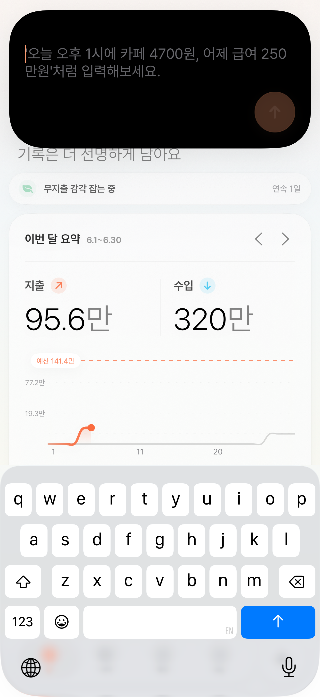
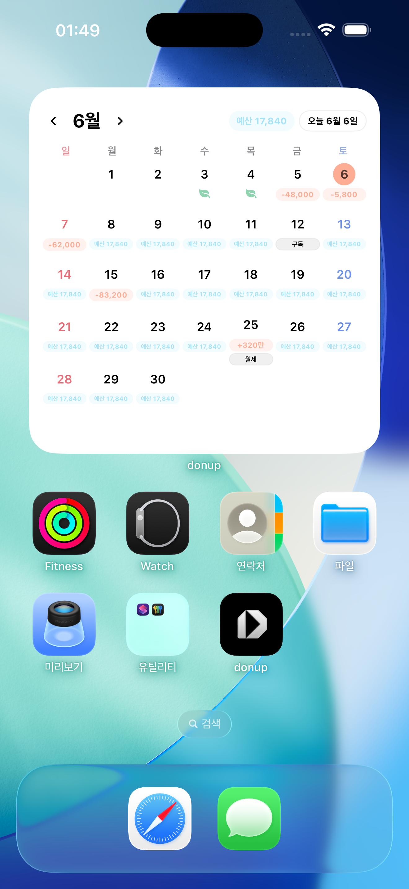
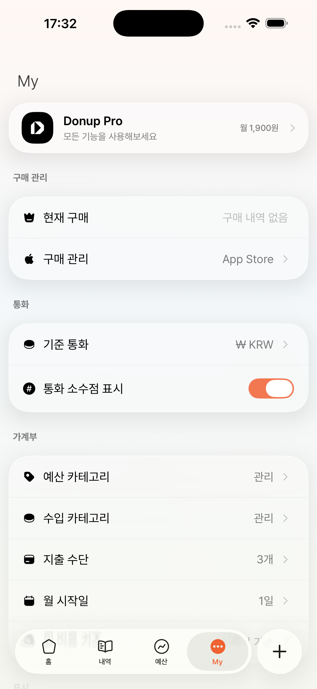

앱을 열기 전부터
기록은 밀립니다.
영수증, 카드 문자, 메모가 각각 흩어져 있으면 시작부터 귀찮아집니다.
개인 가계부 DonUp
DonUp은 자연어, 사진, 결제 문자를 읽어 내역을 저장하고 홈, 예산, 위젯, 알림까지 이어주는 개인 가계부입니다.
지출을 기억하는 일보다 매번 종류, 카테고리, 금액, 결제수단을 고르는 일이 더 오래 걸립니다. DonUp은 그 과정을 빠른 내역 저장으로 줄입니다.
영수증, 카드 문자, 메모가 각각 흩어져 있으면 시작부터 귀찮아집니다.
날짜, 금액, 거래유형, 카테고리, 결제수단을 매번 직접 맞춰야 합니다.
카페인지 식비인지, 고정지출인지 변동지출인지 고르는 사이 기록할 마음이 줄어듭니다.
그때는 분명 알았던 지출도 나중에는 어디에 쓴 돈인지 흐릿해집니다.
쌓인 내역이 없으면 이번 달 소비 흐름도, 다음 지출 판단도 늦어집니다.
한 줄 입력, 결제 문자, 사진 속 지출을 내역으로 저장하고 홈과 예산에서 바로 확인합니다.

텍스트, 결제 문자, 사진, 빠른 입력 위젯이 모두 같은 내역 저장 흐름으로 모입니다. 사용자는 짧게 입력하고 바로 기록하면 됩니다.

“점심 12,000원”처럼 적으면 날짜, 금액, 분류, 결제수단을 한 화면에서 정리해 저장합니다.
짧게 쓰고 내역으로 저장합니다.
문자 속 가맹점과 금액을 읽어 저장합니다.
영수증과 지출 이미지를 나중에 정리합니다.
앱을 찾기 전에 바로 입력을 시작합니다.
홈 요약, 예산, 내역, 위젯, 알림이 같은 기록 흐름으로 연결됩니다.
이번 달 수입과 지출, 고정지출, 변동지출 상태를 앱 첫 화면에서 확인합니다.
식비, 카페, 교통처럼 매일 달라지는 돈과 월세, 구독 같은 고정 비용을 따로 봅니다.

달력, 남은 예산, 빠른 입력 위젯으로 기록과 확인 사이를 줄입니다.
문자 수신 후 가맹점과 금액을 읽어 내역으로 저장합니다.
기록 없음, 예산 도달, 고정지출 전날 알림으로 루틴을 잡습니다.
미선택 지출까지 보여줘 예산 밖으로 새는 돈을 놓치지 않습니다.
CSV, 엑셀, PDF, DonUp JSON 백업을 다룹니다.
DonUp은 회원가입 없이 시작하고, 기본 기록은 이 기기에 둡니다. iCloud와 AI 분석은 사용자가 필요한 기능을 켤 때만 이어집니다.

결제 문자 자동화, 사진·촬영 AI, iCloud 동기화, 데이터 이동이 필요할 때 Pro가 더 편합니다.
카드 승인 문자를 지출 내역으로 이어줍니다.
영수증, 메뉴판, 메모처럼 이미지로 남은 지출을 정리합니다.
기기 변경, 백업, 가져오기와 내보내기를 더 편하게 씁니다.